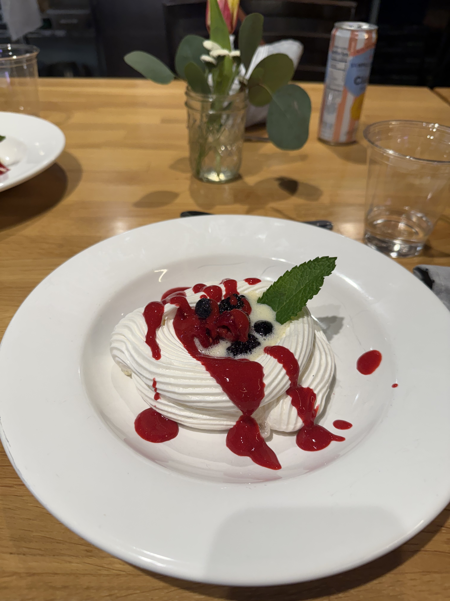
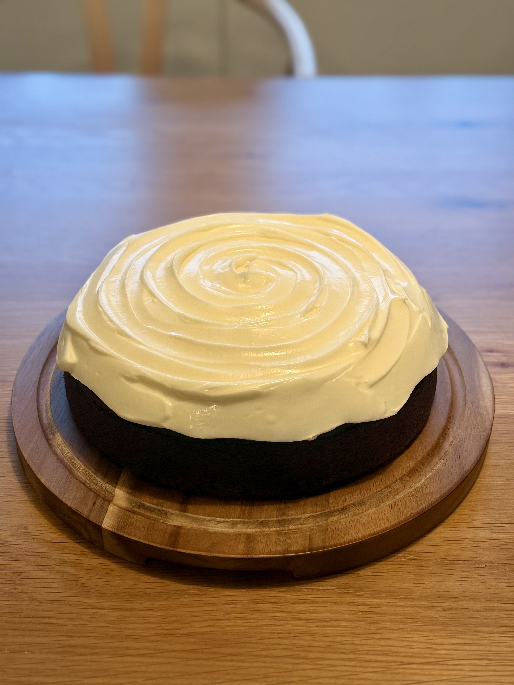
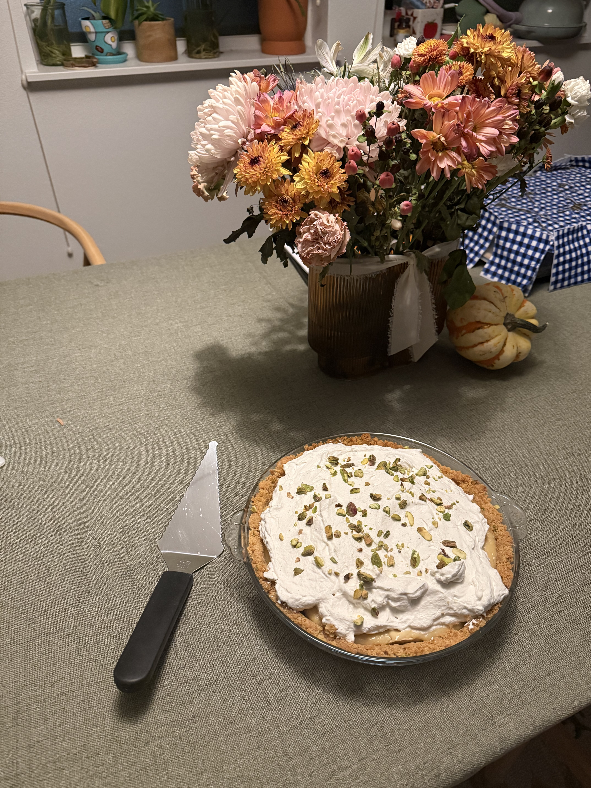
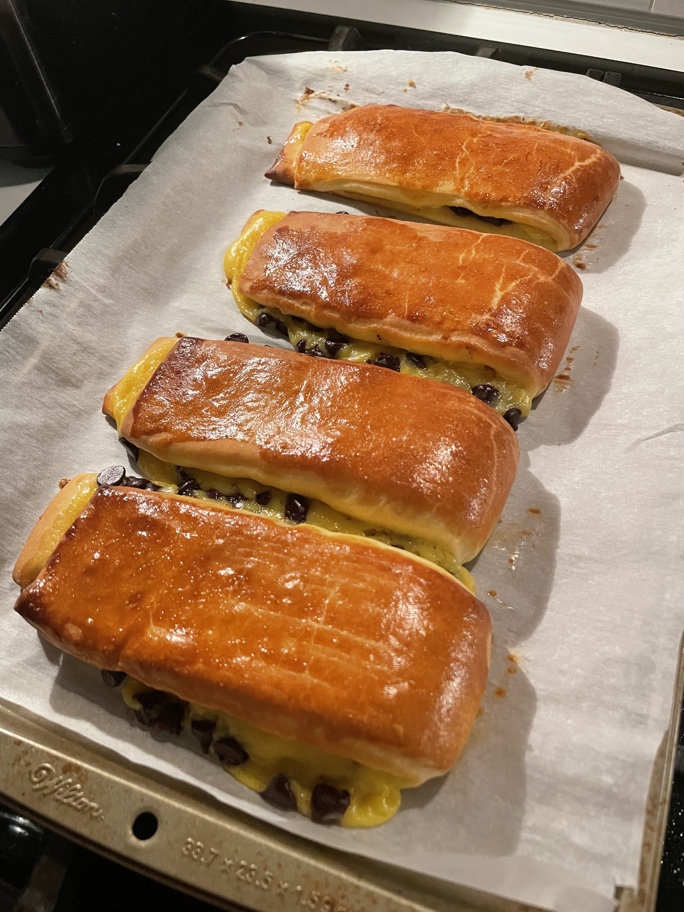
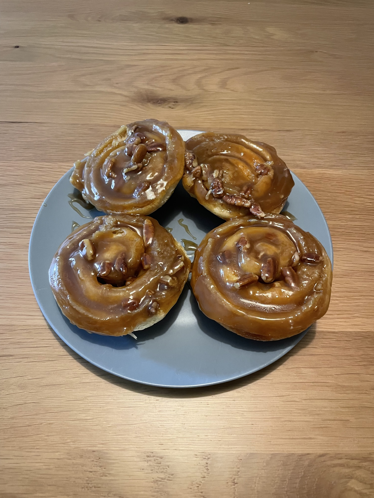

Pastries & Desserts
French technique meets comfort food here: enriched brioche doughs, billowy meringue, and made-from-scratch custards and creams, finished with a playful crunch of pistachio or pecan.




